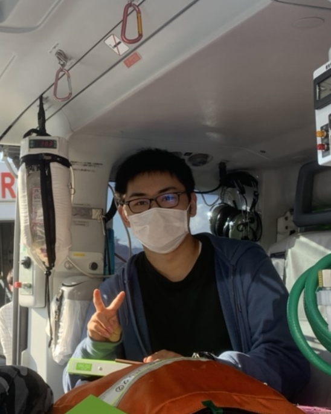

盛岡情報ビジネス＆デザイン専門学校情報システム科１年の鷹木駿です。 普段はWebアプリケーション開発サークルにてサークル代表を務めており開発に必要な知識として、Java・HTML・CSS・AWSなどの技術力の向上を図っています。 また、授業ではJavaを利用したWebアプリケーションの開発を行っており、蔵書管理システムが作成済み、SNSアプリは作成途中です。 今回はこのHPの制作リーダーとして、皆様の参考となる情報をお届けできればと思います。

盛岡情報ビジネス＆デザイン専門学校情報システム科１年の鷹木駿です。 普段はWebアプリケーション開発サークルにてサークル代表を務めており開発に必要な知識として、Java・HTML・CSS・AWSなどの技術力の向上を図っています。 また、授業ではJavaを利用したWebアプリケーションの開発を行っており、蔵書管理システムが作成済み、SNSアプリは作成途中です。 今回はこのHPの制作リーダーとして、皆様の参考となる情報をお届けできればと思います。

最近、兼ねてから興味があった競技プログラミングを始めました。 競技プログラミングと聞くとC++やなどがおすすめ言語として挙げられることが多いですが、私の場合は実務にも活かせるようにということで学習経験のあるJavaを使用しています。 まだまだ始めたばかりで、A問題やB問題をやっと解けるかなといったレベルですが、目標は高く「レッドコーダー」を目指して日々精進しています！